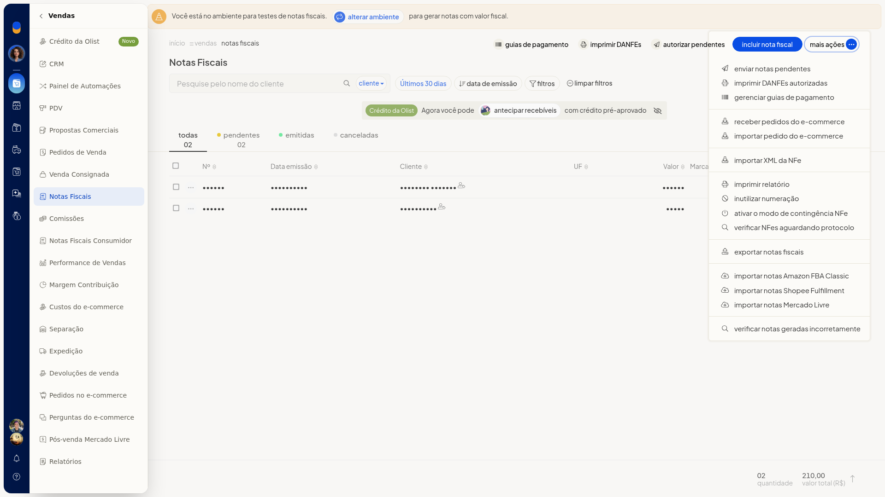
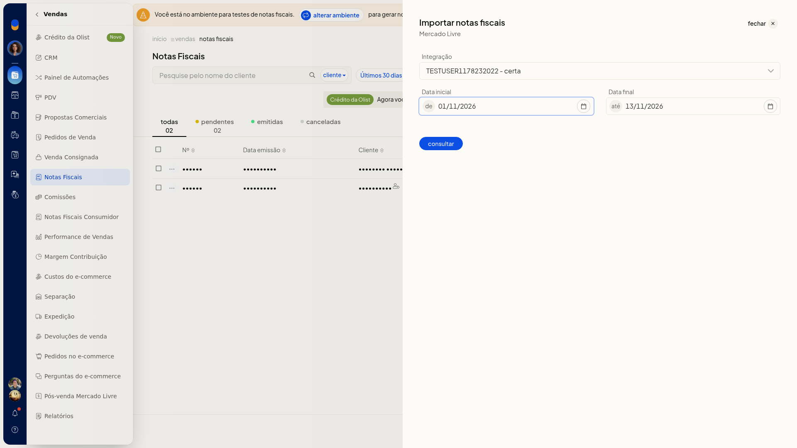

Importar notas do Mercado Livre
Pré-requisitos
- A integração do Mercado Livre já precisa estar conectada. Em Integração aparecem somente as contas conectadas.
Instruções
-
Acesse Vendas > Notas Fiscais.
-
Abra Mais ações > Importar notas Mercado Livre.

-
Selecione a conta em Integração. O campo não é obrigatório e não permite digitar uma conta nova.
-
Confira Data inicial e Data final. Os dois campos não são obrigatórios, abrem preenchidos e usam o formato DD/MM/AAAA. O painel também traz o campo Notas Fiscais.

-
Clique em consultar para consultar as notas da conta no período informado. Para voltar à lista sem consultar, feche o painel.
Informações adicionais
- Integração lista somente contas do Mercado Livre já conectadas.